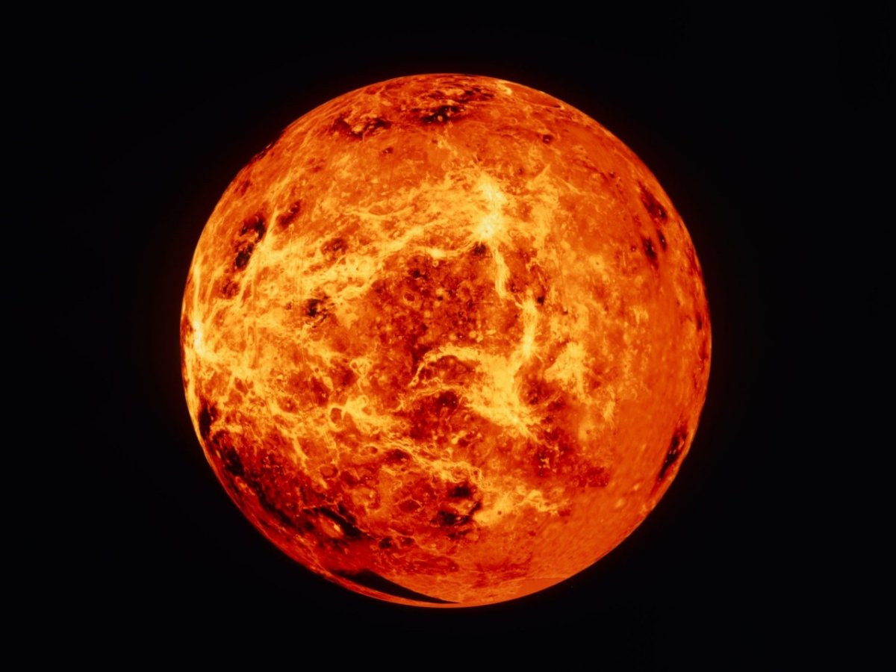
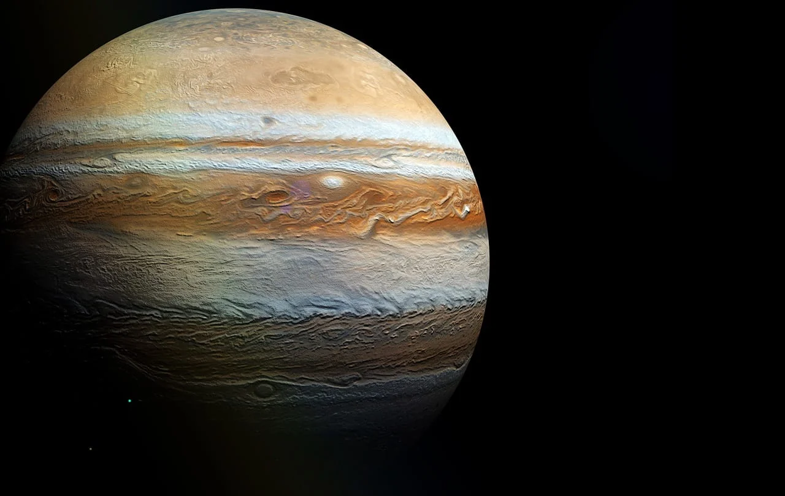
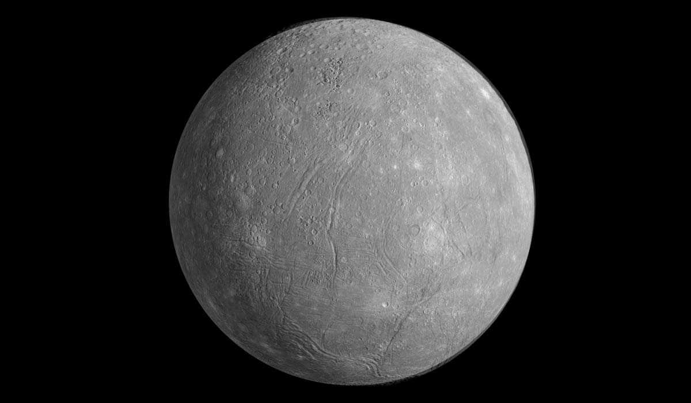

Галерея планет

Марс:
- Найвища гора — Олімп.
- Відомий як "червона планета".
- Має два маленькі супутники — Фобос і Деймос.
- Атмосфера дуже тонка, майже немає кисню.
- Температура коливається від -125°C до +20°C.

Венера:
- Найспекотніша планета.
- Повністю покрита густими хмарами з сірчаної кислоти.
- День довший за рік на Венері.
- Атмосфера 96% складається з вуглекислого газу.
- Названа на честь богині любові у римській міфології.

Юпітер:
- Найбільша планета Сонячної системи.
- Велика Червона Пляма — гігантський шторм.
- Має більше 79 відомих супутників.
- Складається переважно з газів: водень та гелій.
- Видимий навіть неозброєним оком із Землі.

Сатурн:
- Відомий своїми красивими кільцями.
- Складається з водню та гелію.
- Має більше 80 супутників.
- Містить систему кільцевих частинок з льоду та каміння.
- Маса в 95 разів більша за Землю.

Меркурій:
- Найменша планета Сонячної системи.
- Найближча до Сонця.
- Температура коливається від -173°C до +427°C.
- Має дуже тонку атмосферу.
- Поверхня покрита численними кратерами.